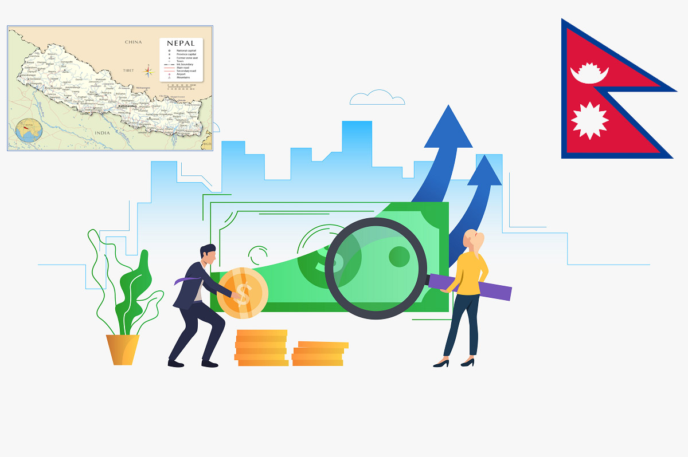

By Aakarshan Dahal
a coding begineer

ECONOMY OF NEPAL:
As of my last knowledge update in January 2022, the information provided here offers a general overview of the Nepalese economy. Please note that economic conditions can change, and it's advisable to consult more recent sources for the latest updates on Nepal's economy.
1. Agriculture:
A significant portion of Nepal's population is engaged in agriculture. The country's diverse topography allows for the cultivation of various crops. Subsistence farming is prevalent in rural areas, with crops such as rice, wheat, maize, and barley being staple foods. Agriculture contributes significantly to employment and remains a vital sector for the economy.
2. Remittances:
Nepal has a considerable number of its citizens working abroad, particularly in the Gulf countries and Malaysia. Remittances from these overseas workers play a crucial role in Nepal's economy, contributing substantially to the country's foreign exchange reserves and supporting household incomes.
3. Tourism:
Tourism is a key sector for Nepal, known for its breathtaking landscapes and as a destination for trekking and mountaineering, including the renowned Everest Base Camp trek. While tourism has faced challenges, including the impact of the 2015 earthquake and the COVID-19 pandemic, it remains a significant contributor to the economy.
4. Hydropower:
Nepal has vast untapped hydropower potential due to its numerous rivers originating from the Himalayas. The development of hydropower projects is a priority for the government to meet domestic energy demands and explore opportunities for export.
5. Manufacturing and Industry:
The manufacturing sector in Nepal includes small and medium-sized enterprises involved in the production of textiles, carpets, handicrafts, and food products. Industrial growth is crucial for job creation and economic development.
6. Services and Information Technology:
The services sector, including information technology and business process outsourcing, is gradually expanding. Kathmandu, the capital city, has emerged as a hub for IT companies and startups.
7. Challenges:
Nepal faces various economic challenges, including infrastructure constraints, bureaucratic hurdles, political instability, and the impact of natural disasters. Additionally, the country has been working on implementing economic reforms to attract foreign investment and improve the ease of doing business.
8. Economic Reforms:
The government has initiated reforms to improve the business environment, promote investment, and enhance economic growth. This includes measures to streamline regulations, encourage private sector participation, and develop infrastructure projects.
9. External Trade:
Nepal's trade is mainly influenced by its proximity to India and China. The country relies on imports for various goods, and trade agreements with neighboring nations play a crucial role in shaping Nepal's external trade dynamics.
In conclusion, Nepal's economy is characterized by its reliance on agriculture, remittances, and tourism, with efforts underway to diversify and enhance other sectors such as manufacturing and hydropower. While the country faces challenges, ongoing reforms and a focus on sustainable economic development aim to create a more robust and resilient economic landscape for Nepal in the future.